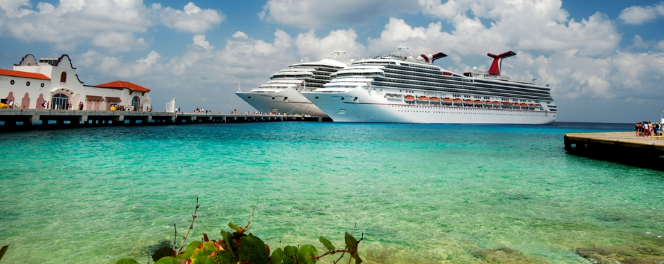
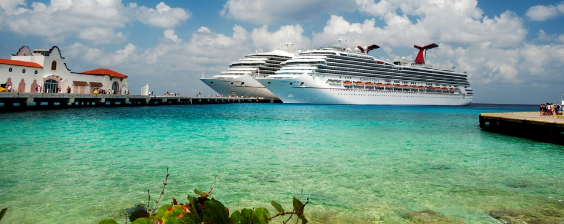

ADVENTURE GALLERY
Puerta Maya
 

This is the grand daddy of all canyons and the grand daddy of all river trips. You will never forget your visit to the Grand Canyon.
Grand Canyon river rafting combines world-class whitewater with breathtaking scenery to make one truly unforgettable river experience. The canyon is filled not only with exhilarating whitewater rapids, but with side canyons and ancient Indian ruins accessible only by river.
CLASS I - X: The Grand Canyon uses a unique river rating scale. The rapids in the Canyon are technically rated I - X ( 1 - 10) to accommodate such a wide variety of rapids and river variances. However, most people are familiar with the regular I - V river rating scale, so we often refer to both.
Playa del Carmen


Winding through canyons in central Utah, in some of the most desolate land anywhere, the Green river flows towards the mighty Colorado river and the sea. High grey stone cliffs, beautiful desert scenery, and great rapids have made this run famous. This 84-mile trip runs from from Sand Wash to Swaseys Rapid (just outside Green River Utah) and boasts outstanding scenery, interesting geologic formations, evidence of prehistoric and historic human activity, and great whitewater opportunities.
Desolation is rated a Class II/III and is usually done in 6 days
Desolation Canyon has been recognized as a National Landmark. This designation is based on the uniqueness and rich history that the canyon tells.
Paradise

Nestled deep in the Frank Church Wilderness of No Return winds the Salmon river. The Salmon was given the nickname long ago as the River of No Return by the people living near it because of the number of folks that came to visit and fell so in love with the rugged beauty of the river that they never left.
Herds of elk and deer graze on the hillsides around the river and bear and bighorn sheep are also commonly sighted. The river corridor is also lined with awe inspiring ponderosa pine which tower over the sandy beaches in the campsites and provide shelter from sun or rain when needed.
Let's not forget the rapids! They range from class I-IV. The Salmon is one of the longest undammed rivers in the United States. As a free flowing river the water is higher, faster, and colder in the early summer and lower, slower, and warmer in the late summer. There are good rapids all summer...but families with children who like to swim tend to appreciate the late summer's slower, warmer water more.